Как получить питомцев
Ярмарка проходит каждый месяц. Из ярмарочных сундуков можно получить Карты месяцев — всего их двенадцать, по одной на каждый месяц года.
Собрав все 12 Карт месяцев, вы можете обменять их на любого ярмарочного питомца по своему выбору. Ни карты, ни сам питомец не имеют срока годности — они остаются с вами навсегда.
Питомцы вызываются двойным щелчком по предмету и действуют 30 минут. Повторный двойной щелчок прогоняет питомца досрочно.
| # | Карта месяца | Месяц | Питомец |
|---|---|---|---|
| 01 | 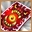 Карта «Ледяной стражи» | Январь | Королевский Пингвин |
| 02 | 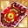 Карта «Стеклянной пыли» | Февраль | Адалит Мо-Мо |
| 03 | Карта «Рассвета» | Март | Пылающий Дракон Ригоса |
| 04 | 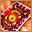 Карта «Поющих деревьев» | Апрель | Царь Саламандр |
| 05 | 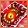 Карта «Тихой воды» | Май | Пещерный Дракон |
| 06 | 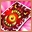 Карта «Красной луны» | Июнь | Кастелян |
| 07 | 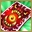 Карта «Пламенной ночи» | Июль | Инопланетный Моллюск |
| 08 | 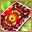 Карта «Полной чаши» | Август | Ледяной Дракон Оллаэро |
| 09 | 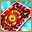 Карта «Упавшей звезды» | Сентябрь | Чемпион Орков |
| 10 | 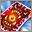 Карта «Терновой ветви» | Октябрь | Муабар |
| 11 | 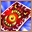 Карта «Голодных ветров» | Ноябрь | Тыквоголовый Джек |
| 12 | 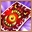 Карта «Зимних когтей» | Декабрь | Ватага Гоблинов |
Январь Королевский Пингвин
Карта месяца «Ледяной стражи». Самые крупные и умные из пингвинов Колдера получают звание Королевских — они очень ценятся в качестве помощников в бою.
| Запас здоровья | +35 |
| Исходящий урон | +35% |
| Входящий урон | −35% |
| Скорость вне боя | +20 |
| Длительность | 30 мин |
Позволяет получать Магические Леденцы в добыче с монстров соответствующего вам уровня.
Дополнительно увеличивает запас маны на 350 и скорость вне боя на 15%. Действует 600 секунд.
Февраль Адалит Мо-Мо
Карта месяца «Стеклянной пыли». Адалиты обожают мёд — и любой из них немедля откликнется на призыв того, кто держит в руках медовый пирожок.
| Запас здоровья | +40 |
| Исходящий урон | +35% |
| Входящий урон | −35% |
| Скорость вне боя | +20 |
| Длительность | 30 мин |
Позволяет получать Медовые пирожки в добыче с монстров соответствующего вам уровня.
Дополнительно увеличивает запас маны на 350 и скорость вне боя на 15%. Действует 600 секунд.
Март Пылающий Дракон Ригоса
Карта месяца «Рассвета». Огромный свирепый змей, способный уничтожить целую роту солдат — он подчинялся только Ригосу, а после его гибели утратил желание сражаться, но остался исключительно сильным союзником.
| Запас здоровья | +35 |
| Исходящий урон | +30% |
| Входящий урон | −35% |
| Скорость вне боя | +20 |
| Длительность | 30 мин |
Каждые 30 секунд накладывает на противников эффект: противник теряет здоровье в размере 60% от нанесённого им урона, действует 10 секунд. Не действует на монстров.
Дополнительно увеличивает запас маны на 350 и скорость вне боя на 15%. Действует 600 секунд.
Апрель Царь Саламандр
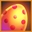
Карта месяца «Поющих деревьев». В этом магическом яйце хранится детёныш Царя Саламандр. Используйте его, чтобы призвать Царя и получить от него поддержку в бою.
| Запас здоровья | +35 |
| Исходящий урон | +30% |
| Входящий урон | −35% |
| Скорость вне боя | +20 |
| Длительность | 30 мин |
Каждые 30 секунд накладывает на владельца и его союзников эффект: увеличивает исходящий урон на 25%, действует 10 секунд.
Дополнительно увеличивает запас маны на 350 и скорость вне боя на 15%. Действует 600 секунд.
Май Пещерный Дракон
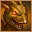
Карта месяца «Тихой воды». В неволе Пещерный Дракон теряет природную агрессивность, но наделяет хозяина особой магией. Питаясь ненавистью к врагам, он не требует пищи.
| Запас здоровья | +35 |
| Исходящий урон | +35% |
| Входящий урон | −35% |
| Эффективность лечения | +5% |
| Скорость вне боя | +25 |
| Скорость в бою | +7 |
| Длительность | 30 мин |
При появлении накладывает на себя и союзников эффект: +5% скорость в бою и вне боя, −5% входящий урон, +7% исходящий урон, +5% эффективность лечения. Действует 3 минуты, обновляется каждые 3 минуты.
Дополнительно увеличивает запас маны на 350 и скорость вне боя на 20%. Действует 600 секунд.
Июнь Кастелян
Карта месяца «Красной луны». Странная на вид вещица хранит в памяти процесс создания Кастеляна и может сделать один экземпляр для вашего личного использования.
| Запас здоровья | +40 |
| Исходящий урон | +40% |
| Входящий урон | −40% |
| Скорость вне боя | +20 |
| Длительность | 30 мин |
Позволяет находить ключи для сундуков Шахтёров и Патрульных в предместьях замков. Защищает от всех негативных эффектов обитателей Хорраса и Замков.
Дополнительно увеличивает запас маны на 350 и скорость вне боя на 15%. Действует 600 секунд.
Июль Инопланетный Моллюск
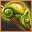
Карта месяца «Пламенной ночи». Никто не знает откуда они взялись, но эти существа явно из другого мира. Рот на панцире, глаз на ногах — только совершенно чуждая эволюция могла породить такого монстра.
| Запас здоровья | +35 |
| Исходящий урон | +35% |
| Входящий урон | −35% |
| Скорость вне боя | +20 |
| Длительность | 30 мин |
Каждые 30 секунд накладывает один из двух эффектов на противников (не монстров):
— с шансом 70%: уменьшает скорость в бою и вне боя на 50%, действует 10 секунд;
— с шансом 30%: уменьшает исходящий урон на 20% и увеличивает входящий урон на 20%, действует 10 секунд.
Дополнительно увеличивает запас маны на 350 и скорость вне боя на 15%. Действует 600 секунд.
Август Ледяной Дракон Оллаэро
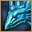
Карта месяца «Полной чаши». Для драконов Оллаэро нужна куда более низкая температура, чем для обычных ледяных драконов — скорлупа их яиц всегда покрыта толстым слоем льда.
| Запас здоровья | +35 |
| Исходящий урон | +35% |
| Входящий урон | −35% |
| Скорость вне боя | +20 |
| Длительность | 30 мин |
Каждые 30 секунд накладывает на противников (не монстров): уменьшает исходящий урон на 10% и эффективность лечения на 20%, действует 20 секунд.
При завершении эффекта с шансом 20% накладывает дополнительный эффект на 5 секунд: −100% лечение, −100% урон, −100% скорость в бою и вне боя.
Дополнительно увеличивает запас маны на 350 и скорость вне боя на 15%. Действует 600 секунд.
Сентябрь Чемпион Орков
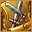
Карта месяца «Упавшей звезды». В древности орочьи шаманы придумали волшебный знак, призывающий сильнейших воинов Орды. Теперь владеющий им берёт с собой в бой грозного Чемпиона.
| Запас здоровья | +35 |
| Исходящий урон | +40% |
| Входящий урон | −35% |
| Скорость вне боя | +20 |
| Длительность | 30 мин |
Каждые 25 секунд снимает с владельца негативный эффект:
— с шансом 75%: снимает эффект «Свиток боли»;
— с шансом 25%: снимает эффекты «Аура Страха» и «Страх смерти».
Дополнительно увеличивает запас маны на 350 и скорость вне боя на 15%. Действует 600 секунд.
Октябрь Муабар
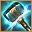
Карта месяца «Терновой ветви». Воплощение бога льда не нуждается в пище — но если предложить Муабару пиво «Волшебная лира», он наградит хозяина особой защитной магией.
| Запас здоровья | +40 |
| Исходящий урон | +35% |
| Входящий урон | −35% |
| Скорость вне боя | +20 |
| Длительность | 30 мин |
Призовите Муабара и используйте пиво «Волшебная лира» — он наложит дополнительный эффект: уменьшает входящий урон на 8% и увеличивает исходящий урон на 10%.
Дополнительно увеличивает запас маны на 350 и скорость вне боя на 15%. Действует 600 секунд.
Ноябрь Тыквоголовый Джек
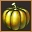
Карта месяца «Голодных ветров». В этой маленькой тыковке сконцентрировались все тёмные силы Хэллоуина — их вполне достаточно, чтобы призвать и подчинить Тыквоголового Джека, могущественного и очень злобного духа.
| Запас здоровья | +40 |
| Исходящий урон | +40% |
| Входящий урон | −40% |
| Скорость вне боя | +20 |
| Длительность | 30 мин |
Увеличивает количество получаемых очков Славы на 20%. Действует 600 секунд.
Дополнительно увеличивает запас маны на 350, скорость вне боя на 15% и количество очков Славы на 20%. Действует 600 секунд.
Декабрь Ватага Гоблинов
Карта месяца «Зимних когтей». Мало кто может устоять перед целой банкой варенья — и Ватага Гоблинов не исключение. Любой гоблин сделает что угодно за баночку-другую.
| Запас здоровья | +35 |
| Исходящий урон | +35% |
| Входящий урон | −35% |
| Скорость вне боя | +20 |
| Длительность | 30 мин |
При появлении и каждые 3 минуты накладывает на себя и союзников эффект: −5% входящий урон, +5% исходящий урон, +5% запас здоровья, а также превращает вас в Ватагу Гоблинов. Действует 3 минуты.
Дополнительно увеличивает запас маны на 350 и скорость вне боя на 15%. Действует 600 секунд.